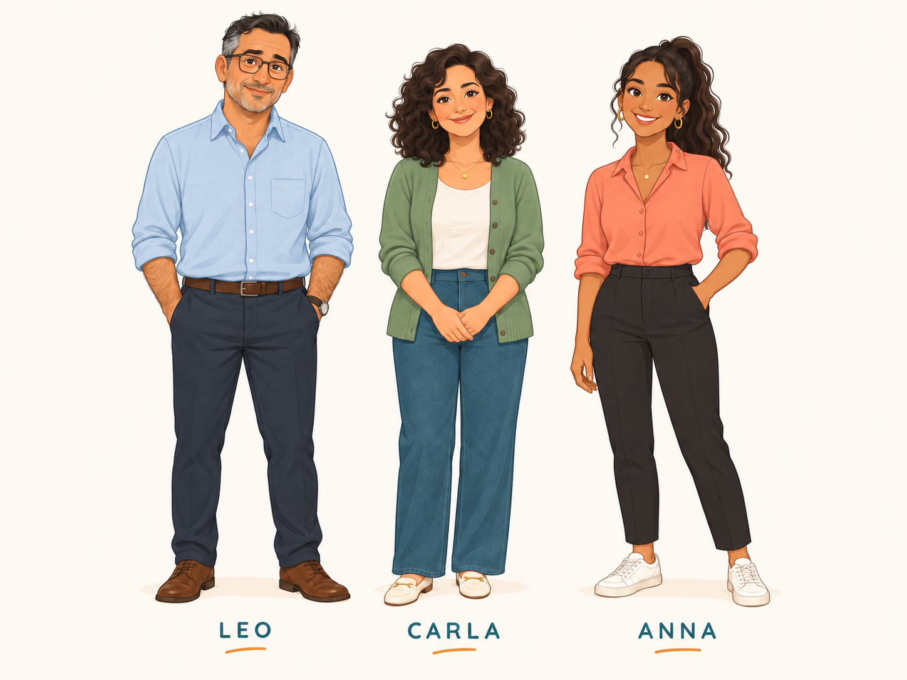

Six o'clock, coffee, traffic, meetings. Talk about your day, and ask about someone else's.
Lesson 4 of the series. ← Lesson 3: My Home · Lesson 5: The Weekend →
These are the new words for A Working Day. Match each word (1–8) to its meaning (A–H). Say your answers out loud — "I think 1 is D" — then check.
1 = G (to get up) · 2 = E (traffic) · 3 = C (a meeting) · 4 = H (a customer)
5 = D (busy) · 6 = A (to finish) · 7 = F (tired) · 8 = B (the weekend)

Leo has a small company. This is his day. Read each part. Then try the questions from memory, and answer the last one about you.
Leo gets up at six. He doesn't like it, but he has a small company, and the company doesn't sleep. He has a coffee in the kitchen. Carla is still in bed. At seven, he drives to work. The traffic is bad. He listens to the radio and thinks about the day.
Anna: Morning, Leo. You look tired.
Leo: I am tired. I get up at six every day.
Anna: Every day? I get up at eight.
Leo: Eight! That's a holiday.
1. What time does Leo get up? Why?
2. How does he go to work?
1. At six. He has a small company, and there is a lot of work.
2. By car. He drives, and the traffic is bad.
Leo's day is meetings. At nine, a meeting with the team. At eleven, a phone call with a customer in Germany. At one, lunch — usually a sandwich at his desk. Anna doesn't like this.
Anna: A sandwich again?
Leo: I don't have time.
Anna: You have thirty minutes. Come to the café.
Leo: OK. Thirty minutes. Not more.
1. What does Leo usually have for lunch? Where?
2. Where do Anna and Leo go?
1. A sandwich, at his desk.
2. To the café, for thirty minutes.
Leo finishes at seven. At home, he has dinner with Carla and the children. Marco talks about football. Sofia talks about school. After dinner, Leo watches the news, and at eleven he goes to bed.
At the weekend, it is different. He doesn't get up at six. He sleeps until nine, and Carla makes pancakes.
Carla: Leo, it's Saturday. Sleep!
Leo: I can't. My phone…
Carla: Give me the phone.
1. What time does Leo finish work? What does he do in the evening?
2. What is different at the weekend?
1. At seven. He has dinner with his family, watches the news and goes to bed at eleven.
2. He doesn't get up at six. He sleeps until nine.
To talk about your day, you need the present simple — and the small words for time.
Use the verb in brackets. Careful with he and she.
1. Leo (get up) at six.
2. I (finish) at five.
3. She (not / like) meetings.
4. he (work) on Sunday?
1. gets up
2. finish
3. doesn't like
4. Does he work
Put the words in order. Then say the sentence out loud.
1. time / What / get up / does / he?
2. at / I / seven / to work / go
3. doesn't / She / on Sunday / work
4. in / meetings / I / the morning / have
1. What time does he get up?
2. I go to work at seven.
3. She doesn't work on Sunday.
4. I have meetings in the morning.
Fill each gap with one word. Read the conversation out loud when you finish.
"What time you start work?" — "At nine. I meetings in the morning, and lunch one." — "And your wife?" — "She at home. She work on Friday."
do · have · at · works · doesn't
she works (-s) · she doesn't work (no -s).
Your first week in a new job. A colleague asks about your day.
Maria: What time do you get up?
You: time · early or late?
Maria: Do you have breakfast?
You: yes or no · what
Maria: How do you go to work?
You: car, bus, train, walk · how long
Maria: What do you do at work in the morning?
You: meetings, emails, phone calls, customers
Maria: What time do you finish?
You: time · busy?
Maria: And in the evening?
You: dinner, family, TV, bed
Maria: What time do you get up?
You: I get up at half past six. It's early.
Maria: Do you have breakfast?
You: Yes, I do. Coffee and bread.
Maria: How do you go to work?
You: By car. It's thirty minutes. The traffic is bad.
Maria: What do you do at work in the morning?
You: I have meetings, and I call customers.
Maria: What time do you finish?
You: At six. Sometimes seven. It's a busy job.
Maria: And in the evening?
You: I have dinner with my family, and I watch TV. I go to bed at eleven.
Answer fast, in full sentences. No time to think. Then check a model answer for the ones that were hard.
1. What time do you get up?
2. Do you have breakfast?
3. How do you go to work?
4. What time do you start work?
5. What do you do at lunch?
6. What time do you finish?
7. What do you do in the evening?
8. What time do you go to bed?
9. Do you work at the weekend?
10. What time does your wife get up?
1. I get up at seven.
2. Yes, I do. Coffee and toast.
3. By car. / By bus. / I walk.
4. At nine.
5. I have a sandwich at my desk.
6. At six.
7. I have dinner and I watch the news.
8. At eleven.
9. No, I don't. / Sometimes.
10. She gets up at seven.
Do all three tasks out loud. Use the timer to keep talking.
Tell Leo's day in your own words. Use these steps: six o'clock → coffee → the car and the traffic → meetings → a sandwich → dinner with the family → the news → bed → Saturday: pancakes.
Careful: he gets up, he has, he finishes.
Tell your normal day from morning to night. Say a time in every sentence: "At seven, I…" Start the timer and keep talking.
Ask me six questions about my day: get up, breakfast, work, lunch, finish, evening. Then tell me my day back: "You get up at… You…"